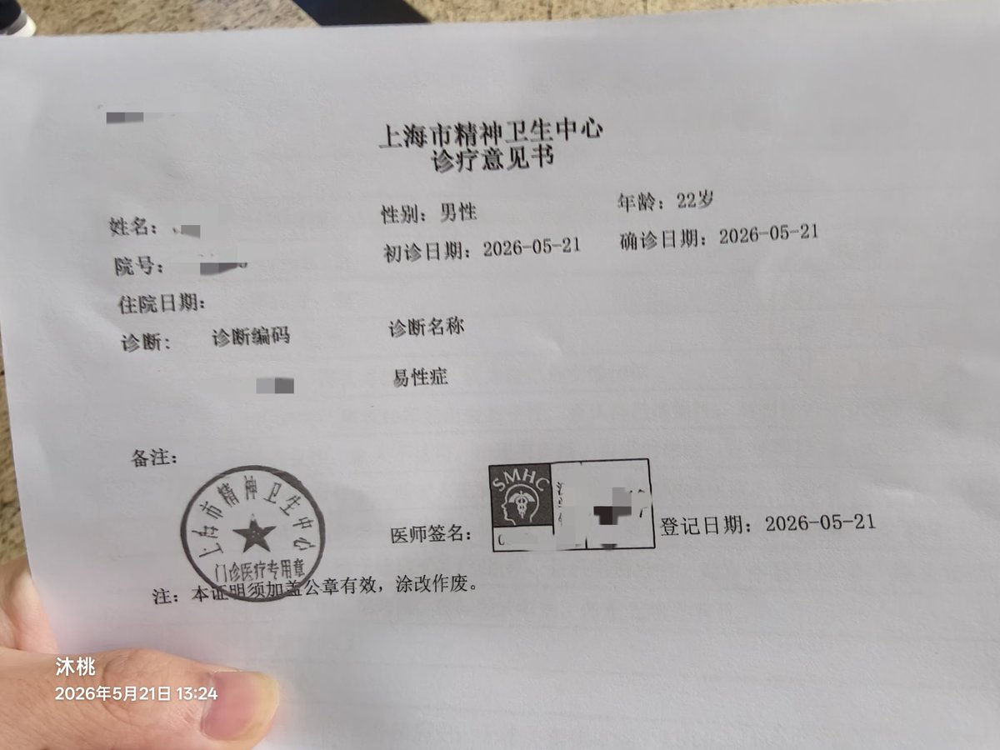

沐桃
@xiey57828
然后叫你去做一个量表mmpi好像是399道题的那个，然后去回诊，他会说需要医院另一个副主任医师及以上医生的诊断，之后挂一个号和这个医生聊聊就可以开诊断证明了。我不知道是不是因为带了家长所以很顺利，是不是因为初诊在其他医院已经写了易性症所以很顺利

沐桃
@xiey57828
给你们讲述一下我拿大证都过程。在此之前我是没有小证的。此前我去了南大二附院那初诊诊断写了易性症但是还没开始诊断，要下次带家长去这个没到一个月我还没带家长去，然后被南大二附院以双相打发走了。然后来上海挂了张毅的号，带着家长，和他说开易性症诊断证明 https://t.co/6FFWXzltFV